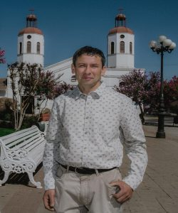
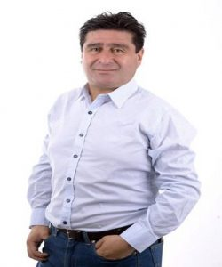
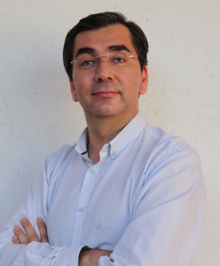
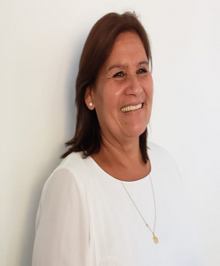
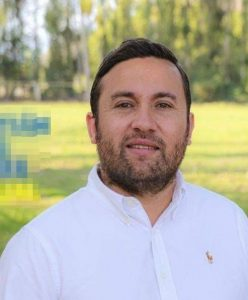

- Tiempos de elecciones a nivel nacional, y como en cada oportunidad son varios los candidatos que se postulan a los diferentes cargos a nivel comunal. Por la Alcaldía son dos los postulantes, el actual alcalde Jaime González Ramírez y actual concejal Guido Carreño Reyes.
Del actual concejo municipal son dos concejales que se presentan a la reelección. José Piña Lagos y Marcelo Abarca Jorquera. Pero además, hay otros 38 candidatos. ¿Quiénes son? ¿Cuáles son sus ideas, propuestas o proyectos? En este espacio te presentamos a los candidatos para que así los conozcas.
CANDIDATOS A CONCEJALES SAN VICENTE TT 2021
CHILE VAMOS – EVOPOLI – INDEPENDIENTES.
EVOLUCIÓN POLITICA:
MAURICIO HENRÍQUEZ ROJAS
- Candidato: Mauricio Henríquez Rojas
- Edad: 25 años
- Profesión u ocupación: Abogado
- Partido político: Evopoli
- Slogan de campaña: “atrévete, decide, actúa”.
- Ideas o propuestas: “Quiero un San Vicente más libre, justo e inclusivo. Donde la cuna no defina tu futuro y en donde el trabajo se haga de manera correcta. Seamos políticos que representen las ideas de la gente.
- Comuna o sector: Zúñiga.
CLAUDIO ESPINOZA CARRASCO
- Candidato: Claudio Antonio Espinoza Carrasco
- Edad: 28 años
- Profesión u ocupación: Profesor con Mención en Dificultades del Aprendizaje, Bailarín y Director de grandes agrupaciones folclóricas de San Vicente.
- Partido Politico: Independiente – Evopoli
- Slogan de Campaña: “Trabajemos Juntos”
- Ideas o propuestas: Como bailarín y director, he tenido la posibilidad de representar a nuestra comuna a lo largo de todo Chile y también en más de 11 países del mundo, donde con orgullo he sido reconocido y destacado por los valores, costumbres, tradiciones, raíces y la variada riqueza cultural que transmite la danza y la música chilena de raíz folclórica. Hoy he asumido el compromiso de ser candidato a Concejal, trabajando enfocado principalmente en Cultura y Educación, que son las herramientas necesarias para encontrar, de manera transversal e integral, el avance y el bienestar de nuestra comuna y de cada uno de ustedes.
- Comuna o sector: Requegua.
MARCELO CANALES COFRÉ
- Candidato: Marcelo Canales Cofré
- Edad: 38 años
- Profesión u ocupación: Emprendedor
- Partido político: Independiente – Evopili
- Slogan de campaña: “Porque San Vicente Puede”
- Ideas o propuestas: “Apoyo permanente e iniciativas que hagan crecer San Vicente, visualizar nuestra ciudad ya no como pueblo sino más bien como una ciudad de referencia, permitiendo el crecimiento inmobiliario, industrial, dando paso a lo cultural y deportivo. Me comprometo a ser un representante de las necesidades de los sanvicentanos, ser un fiscalizador permanente de los recursos del trabajo municipal, ser un promovedor de iniciativas que engrandecen a todos los sanvicentanos. Quiero mayor igualdad, acercar el municipio a la gente, contemplar sectores de la ciudadanía el cual son invisibles al actual gobierno comunal ( adulto mayor y discapacidad), igualar los sectores de la comuna para que las inversiones sean parejas para todos los sectores.
- Comuna o sector: Calle El Medio.
CHILE VAMOS – PRI E INDEPENDIENTES. INDEPENDIENTES. PARTIDO REGIONALISTA INDEPENDIENTE DEMOCRATA.
MARICEL YAÑEZ TORO
- Candidata: Maricel Carolina Yáñez Toro
- Edad: 45 años
- Profesión u ocupación: Dueña de casa.
- Partido Político: Independiente PRI
- Slogan de campaña: “Tu opinión me importa”.
- Ideas o propuestas: “Hagamos valer el derecho a vivir mejor y vivamos desde la convivencia positiva, velare por llevar los problemas de los vecinos al concejo municipal para así mejorar la calidad de vida”.
- Comuna o sector: Pencahue Plaza
SEBASTIÁN CONTRERAS ZAMORANO
- Candidato: Sebastián Contreras Zamorano
- Edad: 37 años
- Profesión u ocupación: Técnico Agrícola – Técnico en Administración de Empresas mención Finanzas
- Parido político: PRI
- Slogan de campaña: “Todos juntos por San Vicente”
- Ideas o propuestas: “Potenciar los programas de integración escolar, dar más información y atención a los sectores rurales ya sea salud, seguridad, deporte, transparencia en todo momento, fiscalización al alcalde y apoyo social a la comunidad”.
- Comuna o sector: Millahue
INDEPENDIENTES:
OLAYA ACEVEDO ARCE

- Candidata: Olaya Acevedo Arce
- Edad: 45 Años
- Profesión u ocupación: Cajera bancaria
- Partido político: Independiente
- Slogan de campaña: «Por mi gente de esfuerzo y trabajo»
- Ideas o propuestas: «Soy muy apegada a las raíces de nuestra tierra, desde los 12 años trabaje en el campo, se la vida de un agricultor lo que cuesta mantenerse y salir adelante junto a la familia. Quiero ser concejal para ser su voz en el concejo, para que los dineros sean bien distribuidos entre las problemáticas de la gente, fiscalizar los recursos y que estos sean gastados en los vecinos de nuestra comuna»
- Comuna o sector: Toquihua
JOSE OLEA POZO
- Candidato: José Olea Pozo, optó por no aceptar este informativo a la comunidad.
MARCIA LLANQUILEO LLANQUILEO
- Candidata: María Marcia Llanquileo Llanquileo
- Edad: 45 Años
- Profesión u ocupación: Técnico en trabajo social.
- Partido Político: Independiente
- Slogan de campaña: «Por un San Vicente más inclusivo»
- Ideas o propuestas: «Soy dirigente sindical hace 13 años en Planta Faenadora San Vicente. No nací siendo líder, me formé como dirigente sindical por necesidad, producto de evidentes abusos laborales que nadie supo frenar en su momento. Trabajé duro y me preparé para hacerlo bien, sin competir con nadie, solo tratando de cambiar lo que estaba a mi alcance. Creo que es importante la revitalización sindical, debemos reinventarnos, usar estrategias y formas de organización que nos diferencie del sindicalismo clásico, debemos trabajar en la construcción de alianzas entre sindicatos y otros movimientos sociales, así como el desarrollo de campañas que apunten a dignificar y difundir la función de los sindicatos. Desde mi perspectiva, no basta hablar y preocuparse de todo aquello que todos los candidatos a los distintos cargos públicos se preocupan, hacer campaña con aquello que a todos afecta: salud, educación, cultura, recreación, entre otros. Donde es lógico, todos y todas aparecen con ideas, soluciones e incluso promesas formidables, pero nadie habla del abandono de los trabajadores. Vemos como nuestra clase trabajadora dependiente, en especial los temporeros, así como los que prestan servicios en supermercados y en empresas más pequeñas, viven en constante vulneración por la insuficiente función de la inspección del trabajo que carece formalmente de atribuciones para mantenerse en alerta frente a las demandas propias de estos miles de trabajadores y trabajadoras, los cuales víctimas de la ignorancia, en algún casos absoluta, sobre sus derechos, propician un escenario ideal donde se dan las peores vulneraciones».
- Comuna o sector: San Vicente
CHILE VAMOS: RENOVACION NACIONAL – INDEPENDIENTES.
RENOVACIÓN NACIONAL
IVÀN MIRANDA GONZALEZ
- Candidato: Iván Miranda González
- Edad: 43 Años
- Profesión u ocupación: Ingeniero Civil Industrial, Maestria en Administración de empresas
- Partido Político: Renovación Nacional
- Slogan de Campaña: «100% Efectividad – Avanzando con todo y para todos»
- Ideas o propuestas: «Transparencia en la gestión Municipal. Descentralización de los servicios y equidades sociales. Desarrollar una Mejor Planificación comunal. Fortalecer Educación pública con recursos y accesos. Gestión Seguridad. Desarrollo gestión presupuestaria eficiente. Aumento cobertura y soluciones Protección Social. Fomento recursos deporte alta competencia y amateur. Desarrollo y fomento herramientas permitan emprendimiento y desarrollo de Pymes. Aumentar competencias y acceso programas de innovación. Protección del medio ambiente, animales y fiscalización agentes contaminantes. Entregar recursos y herramientas para fortalezas, generar nuevos talentos artes y folklore. Desarrollo educación de Integración, no discrimina, diversidad y respeto. Fiscalización de actos de nepotismos, cohecho y corrupción”.
- Comuna o sector: San Vicente
ÀNGEL OSORIO GÀLVEZ
- Candidato: Ángel Osorio Gálvez
- Edad: 38 Años
- Profesión u ocupación: Periodista
- Partido político: Renovación Nacional
- Slogan de campaña: «Vamos adelante»
- Ideas o propuestas: «Enfoco mi trabajo en problemáticas que están presente en nuestra comuna tanto como Emprendimiento, seguridad, salud y mascotas
- Comuna o sector: San Vicente
JUAN RAMÌREZ MATURANA

- Candidato: Juan Francisco Ramírez Maturana
- Edad: 50 años
- Profesión u ocupación: Técnico Ciclista
- Partido político: Renovación Nacional
- Slogan de Campaña: “Por un cambio de verdad”
- Ideas o Propuestas: “Velar por las necesidades de las personas de cada rincón de mi comuna San Vicente de Tagua Tagua, que se respeten los grandes acuerdos para el desarrollo de la comuna, hay mucho que hacer y mucho que cambiar, mejorar las condiciones y los emprendimientos de vida de mi gente ya sea en su entorno social, productivo, recreativo, cultural, salud, educación y deportivo, no prometo nada, trabajaré por mi gente humilde y de esfuerzo”.
- Comuna o sector: La Puntilla.
RODRIGO SANDOVAL ABARCA
- Candidato: Rodrigo Sandoval Abarca
- Edad: 32 años.
- Profesión u ocupación: Egresado de derecho
- Slogan de campaña: «Con voluntad siempre se puede»
- Partido político: Renovación Nacional.
- Ideas o propuestas: “Plebiscitos municipales y consultorías ciudadanas, establecer el comercio informal y dar mayores oportunidades a emprendimientos, erradicar el abuso de poder, luchar incansablemente contra la violencia de género, mayor espacio y oportunidades para nuestro artista sanvicentano, locomoción gratuita para nuestros adultos mayores, wifi gratis para espacios públicos de la comuna”.
- Comuna o sector: San Vicente
DANIEL UMAÑA DONOSO
- Candidato: Daniel Jesús Umaña Donoso
- Edad: 31 Años
- Profesión u ocupación: Ingeniero en seguridad y prevención de riesgos. Técnico Enfermería nivel superior mención ginecobstetricia.
- Slogan de campaña: “Tiene calle, Súmate”.
- Partido Político: Renovación Nacional
- Ideas o propuestas: “Sueño con un San Vicente más justo, equitativo y con igualdad de oportunidades para todos y todas. Mi oficina será la calle, en terreno, junto a ustedes a los vecinos y toda la comunidad. Si ustedes me dan la oportunidad, seré un aporte real, permitiendo que los recursos y apoyos que ingresan al Municipio puedan llegar a toda la comunidad, velando por la transparencia y buscando permanentemente el bienestar social de nuestra Comuna
- Comuna o sector: Viña Tagua Tagua
INDEPENDIENTES
KATERIN BASTIAS OLEA
- Candidata: Katerin Carolina Bastias Olea
- Edad: 32 Años
- Profesión u ocupación: Técnico jurídico y egresada de derecho.
- Partido político: Independiente – RN
- Slogan de Campaña: «Estoy Contigo»
- Ideas o propuestas: «Trabajando en pos de la justicia fiscalizando, trabajare por descentralizar San Vicente, luchar por los temporeros y agricultores, potenciar a las mujeres comercio y turismo local, sin olvidar la zona típica y arqueológica. En San Vicente es importante impulsar una oficina jurídica donde el Alcalde y sus concejales estén a favor de poder brindar esta ayuda a los vecinos de la comuna, también incorporar màs areas verdes para nuestros niños».
- Comuna o sector: San José de Pataguas
CHILE VAMOS: UDI – INDEPENDIENTES
UNIÓN DEMOCRATA INDEPENDIENTE
PILAR ARAYA BALCAZAR
- Candidata: Pilar Araya Balcazar
- Edad: 57 años
- Profesión y ocupación: Secretaria ejecutiva
- Slogan de campaña: “Porque San Vicente lo construimos todos”
- Partido Político: Unión Demócrata Independiente
- Ideas o propuestas: “Quiero ser la voz de vecinos y vecinas, organizaciones sociales, culturales y deportivas, fortaleciendo la participación ciudadana. Ser un puente entre el municipio y la comunidad, ampliando la labor fiscalizadora propia del concejal. Tengo la experiencia y energía para fortalecer San Vicente”.
- Comuna o sector: San Vicente
MIGUEL ANGEL DIAZ.

- Candidato: Miguel Ángel Días Pinto
- Edad: 49 Años
- Profesión u ocupación: Comunicador Social
- Partido Político: Unión Demócrata Independiente
- Slogan de campaña: “Ahora si»
- Ideas o propuestas: «Implementar una nueva ayuda al adulto mayor. Crear un organismo contra la drogadicción. Apoyar a todos los deportes. Buena atención en todas las oficinas fiscales y municipales. Frenar la delincuencia. Auspiciar proyectos que dejen ganancia al municipio».
- Comuna o sector: San Vicente TT
ESTEBAN PETRI VALDEZ
- Candidato: Esteban Petri Valdez.
- Edad: 31 años.
- Profesión u ocupación: Relacionador Público corporativo.
- Partido: UDI.
- Slogan de campaña: «La información es poder»
- Ideas o propuestas: «Fiscalización, seguridad pública y cercanía».
- Comuna o sector: El Tambo.
INDEPENDIENTES:
ALBERO PAVEZ SOTO

- Candidato: Alberto Pávez Soto
- Edad: 41 Años
- Profesión u ocupación: Locutor Radial y comercial
- Partido político: Independiente
- Slogan de campaña: «Una voz para San Vicente»
- Ideas o propuestas: «Seré un concejal en terreno, trabajare por descentralizar San Vicente preocupándome de los sectores rurales, trabajare en conjunto con las instituciones o agrupaciones para conocer cada una de sus problemáticas y ayudarles a generar proyectos. Apoyar a los emprendedores y talleres de la mujer donde tengan un espacio donde mostrar sus productos. Apoyare firmemente al mundo del huaso corralero para seguir disfrutando y fomentando nuestras tradiciones. Nuestros jóvenes y artistas locales tendrán siempre mi apoyo, han estado muy abandonados y lo necesitan”
- Comuna o sector: Bellavista – El Naranjal
JUAN CARLOS ROJAS BARRERA
- Candidato: Juan Carlos Rojas Barrera, no respondió a nuestro llamado para participar en este resumen informativo.
DIEGO SAHADY ARRUA

- Candidato: Diego Sahady Arrua
- Edad: 33 Años
- Profesión u ocupación: Técnico Agrícola
- Partido político: Independiente – Chile Vamos
- Slogan de campaña: «A fuerza de empuje y amor».
- Ideas o propuestas: «Sanvicentano, promoción y gestión de proyectos deportivos, sociales, reciclaje, historia y cultura de nuestra comuna. Además de trabajar con transparencia y honestidad en cada objetivo. Velar por buenas gestiones y fiscalizar de buena forma la labor del alcalde y los recursos municipales. Hacer partícipe a la Comunidad».
- Comuna o sector: San Vicente
FRENTE AMPLIO
CONVERGENCIA SOCIAL E INDEPENDIENTES
CONVERGENCIA SOCIAL
HECTOR YAÑEZ HERNANDEZ
- Candidato: Héctor Yáñez Hernández
- Edad: 32 Años
- Profesión u ocupación: Ingeniero en Agronegocios, Campesino
- Partido Político: Convergencia Social
- Slogan de campaña: «Ecoconcejalia por el buen vivir de Sanvi»
- Ideas o propuestas: «Estudié en el colegio el salvador y me titulé de Ingeniero en la universidad de Santiago. Práctico la agricultura ecológica y por lo mismo sueño con una comuna ecológica donde todos y todas tengan derecho al Buen Vivir y una alimentación saludable. Me gustaría contribuir a que San Vicente por ordenanza municipal sea la primera comuna agroecológica de la sexta región, disminuir el uso de pesticidas que dañan la salud de los habitantes de la comuna y del medio ambiente y mejorar las condiciones de trabajo del temporero agrícola en nuestros campos. Creo en un San Vicente en donde los servicios municipales tengan mayor presencia en las zonas rurales y apoyo totalmente al deporte y la cultura local».
- Comuna o sector: Pencahue Central
JORGE PÁVEZ ROZAS
- Candidato: Jorge Luis Pávez Rozas
- Edad: 34 años
- Profesión u ocupación: Profesor de Historia y Geografía
- Partido político: Convergencia Social
- Slogan de campaña: “Sanvi Te Quiero”
- Ideas o Propuestas: “Creo firmemente en la importancia de la participación social como un pilar fundamental de la democracia. Para ello debemos fortalecer a las organizaciones sociales, educar el diálogo cívico y abrir el municipio a la intervención efectiva de todas y todos. La participación social deberá ser un pilar transversal de la administración municipal y que permita que las organizaciones y ciudadanos sean activos en el diseño de las principales políticas municipales.
- Comuna o sector: Población Miguel Bustamante – Callejones
INDEPENDIENTES:
ALMENDRA ROMÀN FUENTES
- Candidata: Almendra Román Fuentes
- Edad: 21 Años
- Profesión u ocupación: Auxiliar de aseo
- Partido político: Independiente – Frente Amplio.
- Slogan de campaña: «Hay que actuar y hacer el cambio sin tanta palabrería. Siempre con la verdad y empatía».
- Ideas o propuestas: “Hacer de una comuna más ecológica y sustentable con acciones como educación ambiental, puntos de reciclaje en todas las localidades, incentivar e informar, promover semillas para la creación de huertos en casa desde la agroecología. Educación y salud con perspectiva de género, implementar la educación sexual a temprana edad y no sexista. Creación de una veterinaria municipal y mayor seguridad. Restaurar y visibilizar el patrimonio, la cultura y los emprendimientos locales. Red de apoyo y casa para los casos de violencia hacia la mujer, de genero y violaciones a los derechos de los niños. Recuperación de áreas verdes como estero Zamorano y cerros. Mayor participación ciudadana y transparencia”
- Comuna o sector: Pumaitén
FRANCISCO CASTRO SOTO
- Candidato: Francisco Javier Castro Soto
- Edad: 26 Años
- Profesión u ocupación: Agricultor, feriante, estudiante de derecho.
- Partido Político: Independiente
- Slogan de campaña: “Con esfuerzo y con la gente Francisco Castro Independiente”
- Ideas o propuestas: Soy un orgulloso oriundo de Los Rastrojos, proveniente de una familia campesina, feriante y agricultor por vocación y estudiante de derecho. Me identifico con la gente trabajadora, sacrificada y de esfuerzo, como lo son mi familia y mis vecinos con los que comparto todos los días. Desde mis tiempos de estudiante en la comuna he conocido de cerca las necesidades de un sanvicentano de a pie. Nuestra comuna es hermosa pero hay mucho por mejorar, en deporte, cultura, sustentabilidad y reciclaje, educación y salud. Y son estos los ejes de mi plan de trabajo que buscaré impulsar como concejal. Les invito a conocer nuestro proyecto, digo nuestro porque cuento con un equipo de trabajo de ciudadanos comunes con los que soñamos transformar la comuna y avanzar siempre pensando en mejorar la calidad de vida en nuestros barrios, potenciando el tejido social que siento se ha perdido un poco y que es esencial en la búsqueda de un mejor vivir. No puedo prometer algo diferente a representarlos con todas las herramientas que la vida me ha otorgado en la búsqueda de hacer de nuestra comuna un lugar mejor para todas y todos, con igualdad de oportunidades”
- Comuna o sector: Los Rastrojos
RADICALES E INDEPENDIENTES
PARTIDO RADICAL DE CHILE
ALEJANDRO RAMIREZ REYES
- Candidato: Alejandro Ramírez Reyes no respondió a nuestro llamado para participar en este resumen informativo.
SAID JARUFE SATUF
- Candidato: Said Jarufe Satuf, no respondió a nuestro llamado para participar en este resumen informativo.
INDEPENDIENTES
DANIEL MORELLI PASTEN
- Candidato: Daniel Antonio Morelli Pasten
- Edad: 57 Años
- Profesión u ocupación: Técnico eléctrico
- Partido político: Independiente – Partido Radical
- Slogan de campaña «Cultura y conocimiento son base de un pueblo»
- Ideas o propuestas: «Mis proyectos se concentrar en reabrir posta Pueblo de Indios y localidades que aún no tengan, además de apoyar la construcción del centro de formación técnica”
- Comuna o sector: Pueblo de Indios
CAMILA PONTILLO ORTUZAR
- Candidata: Camila Pontillo Ortuzar
- Edad: 25 Años.
- Profesión u ocupación: Estilista unisex
- Partido Político: Independiente – Partido Radical
- Slogan de campaña: «Si, juntos podemos»
- Ideas o propuestas: «Proponer una mesa de trabajo Municipal con el fin que se cumpla a cabalidad con la Ley Cholito, la ley señala que cada Municipalidad debe dictar una ordenanza sobre este tema. Hay que proponer que en plazas o parques haya puntos limpios donde se pueda retirar bolsas biodegradables para retirar el excremento de las mascotas. Incorporar un centro de rescate animal para nuestra comuna, que pueda acoger o curar animales. Apoyo a las mujeres de nuestra comuna, realizar talleres con el fin de erradicar la violencia de género, educando a la mujer para que sepa que es y cómo se puede denunciar. Orientar con el fin de que tenga conocimiento como acceder a la justicia con el fin de solicitar una pensión de alimentos o denunciar hechos de violencia. Proponer más equidad de género en puestos municipales, para que la mujer tenga un rol preponderante en este. Realizar distintos talleres orientados a la mujer joven con el fin de que se inserte en el mercado laboral o emprenda con su pyme».
- Comuna o sector: San Vicente
UNIDAD POR EL APRUEBO – PS – PPD E INDEPENDIENTES – PS E INDEPENDIENTES
PARTIDO SOCIALISTA DE CHILE
MARCELO ABARCA JORQUERA

- Candidato: Marcelo Roberto Abarca Jorquera
- Edad: 43 años
- Profesión u ocupación: Asistente Social, Licenciado en Trabajo Social
- Partido político: Partido Socialista
- Slogan de campaña: “Puedes Contar Conmigo”
- Ideas o propuestas: “Trabajar para mejorar los espacios públicos y comunitarios de las poblaciones urbanas y los sectores rurales, con infraestructura adecuada para el desarrollo del deporte, la cultura y la vida de barrio y familia. Fomentar el desarrollo equilibrado del territorio de la Comuna. Promover la Participación Ciudadana para que los ciudadanos sean actores relevantes en el desarrollo de la Comuna. Cumplir un rol de promotor y gestor del desarrollo local en las áreas productivas, culturales, deportivas, sociales, entre otras; organizando a las personas, atrayendo proyectos y recursos para la Comuna y canalizando las inquietudes ciudadanas. Al momento de votar en el Concejo Municipal, se debe evaluar cada situación con una mirada democrática, progresista, tolerante y de justicia social, y apoyar los proyectos e iniciativas que vayan en beneficio de San Vicente, del bien común de los vecinos y que mejoren nuestra calidad de vida.”
- Comuna o sector: San Vicente
KATHERINE CASTRO VERA
- Candidata: Katherine Macarena Castro Vera.
- Edad: 41 Años.
- Profesión u ocupación : Técnico en enfermería a nivel superior.
- Slogan de campaña: «Una mujer de la primera línea al concejo municipal»
- Partido político: Partido Socialista.
- Ideas o propuestas: Solo puedo proponerles que daré todo de mí para apoyar con transparencia el desarrollo de nuestro San Vicente T. T , crear y aprobar proyectos, con la ayuda de tod@s ustedes, que sean acordes al desarrollo y beneficio de nuestra comuna y no de terceros.
- Comuna o sector: San Vicente
LILIAN SILVA SOTO:

- Candidata: Lilian Silva Soto
- Edad: 59 años
- Profesión u ocupación: auxiliar de servicios
- Partido político: Partido Socialista
- Slogan de campaña: “Más cercanía, más Compromiso”
- Ideas o propuestas: “Solo puedo proponer que daré todo de mi parte para trabajar con trasparencia. Ser un vínculo real entre el municipio y la comunidad. Trabajar codo a codo con todas las juntas de vecinos tanto rurales como urbanas. Fiscalizar el cumplimiento de los planes y programas de inversión municipal.
- Comuna o sector: El Tambo
INDEPENDIENTES:
SEBASTIAN FLORES CANALES

- Candidato: Sebastián Ignacio Flores Canales
- Edad: 34 años
- Profesión u ocupación: Profesor de Historia y licenciado en Humanidades
- Partido político: Independiente – Pacto Unidos por el Apruebo.
- Slogan de campaña: «La Historia de San Vicente la escribimos todas y todos»
- Ideas o propuestas: «Fortalecer la labor del Preuniversitario Popular, extender su alcance y/o replicar el modelo es otros sectores de nuestra comuna. Entregar de manera gratuita una preparación de calidad a los jóvenes de nuestra comuna para el acceso a Educación superior. Potenciar el concepto de salud familiar, apoyando al gobierno comunal en la gestión para instalar CECOF en diversos sectores de la comuna (sector norte-Pueblo de Indios-Millahue, etc) mejorando la atención en los sectores rurales y de paso descongestionando CESFAM. Innovación comunitaria, solicitar la creación de una Oficina que se avoque a propiciar, almacenar y apoyar las ideas y proyectos de los vecinos que tengan como sentido el mejoramiento de la vida comunitaria, de la calidad de vida y de la convivencia, es pos de la creación de una comuna que se co-construye. Fortalecer la reforestación con especies nativas en conjunto con las diversas organizaciones sociales de la comuna. Fomento y desarrollo, crear espacios a los diversos productores locales y a los jóvenes emprendedores; sobre todo dar cabida a aquellas innovaciones orientadas al rescate patrimonial y al manejo sustentable del medio ambiente. Deporte, apoyar toda iniciativa tendiente a la creación de espacios para la práctica de deportes individuales y masivos. Dando espacios a nuevos deportes que se practican en comuna (patinaje, rugby, etc) Apoyar las gestiones en el mejoramiento de campos deportivos; instalación de camarines, cierres perimetrales, torres de iluminación, etc. Apoyo a iniciativa de crear un espacio para el desarrollo seguro e integrado a la comunidad de deportes urbanos como skate, bicker, parkour entre otros. Adulto Mayor, continuar y potenciar con programas orientadas a mejorar la calidad de vida de nuestros adultos mayores. Gestionar alianzas estratégicas con el comercio local para entregar beneficios a los adultos mayores. Potenciar el programa postrados para ir en ayuda multidisciplinaria y constante a aquellos adultos mayores y vecinos en calidad de postrados, mejorando su calidad de vida. Cultura, gestionar en conjunto con el Gobierno local la creación de una Corporación Cultural que permita fomentar las diversas expresiones artísticas, el fomento de la riqueza patrimonial y arqueológica de nuestra comuna, y al mismo tiempo propiciar un espacio comunal para toda manifestación artística cultural (sala de ensayos-sala de exposiciones- sala de conferencias, etc.) Calidad de vida, apoyar las gestiones para la concreción del Parque Municipal de la Puntilla. Estudiar la creación de una Veterinaria Popular. Apoyar las gestiones de infraestructura de colectividad para localidades de nuestra comuna (camino de la Vinilla- camino de El Llano de Rinconada- mejoramiento callejones de la comuna) Estudio de regulación vial de la comuna; fomento del uso de bicicletas, evitar congestión vehicular, etc. Estudiar creación de paseo peatonal permanente en calle Tagua Tagua (sector plaza de Armas) para el fomento de actividades de recreación, desarrollo gastronómico, desarrollo de actividades culturales».
- Comuna o sector: San Vicente TT
PATRICIO PIÑA LAGOS
- Candidato: José Patricio Piña Lagos, no respondió a nuestro llamado para participar en este resumen informativo.
UNIDOS POR LA DIGNIDAD: DC – PPD E INDEPENDIENTES
PARTIDO DEMÓCRATA CRISTIANO
MARCELA SILVA BARRERA
- Candidata: Marcela Silva Barra
- Edad: 49 años
- Profesión u ocupación: Secretaria Bilingüe
- Partido Político: Democracia Cristiana
- Slogan de campaña: “Tu confianza, mi compromiso”
- Ideas o propuestas: “Entendiendo que el rango de acción del cargo de concejal está muy definido en la Ley Orgánica Constitucional de Municipalidades, que es la fiscalización, ¡éste puede ser también un trabajo muy proactivo. Ahí es donde pretendo que puedan generarse políticas públicas dinámicas , aprovechando para el bien común los talentos con que San Vicente cuenta. En este caso, los trabajos en cultura e identidad, adulto mayor y bienestar ciudadano son fundamentales. Quiero asumir un rol promotor positivo, sin promesas que de antemano uno sabe que no se podrán cumplir. Lo fundamental en estos tiempos es retomar la labor pública con honestidad, porque compartimos los mismos espacios de vida entre todos”.
- Comuna o sector: San Vicente TT.
MANUEL CÁCERES ALARCÓN
- Candidato: Manuel Cáceres Alarcón
- Edad: 57 años
- Profesión u ocupación: Contador General
- Partido Político: Demócrata Cristiano
- Slogan de campaña: «San Vicente en el corazón»
- Ideas o propuestas: «La municipalidad junto a su alcalde y concejales, deben ser quienes gestionen soluciones. El municipio debe ser la pieza fundamental del motor, que este al servicio de San Vicente. Quiero seguir profundizando todo lo bueno que se ha hecho y hacer nuevas propuestas futuras»
- Comuna o sector: San Vicente.
PARTIDO PROGRESISTA DE CHILE
WILFREDO CID LEMUN
- Candidato: Wilfredo Cid Lemun
- Edad: 43 años
- Profesión u ocupación: Comerciante informal
- Partido político: Partido Progresista de Chile
- Slogan de campaña: «Por amor a San Vicente»
- Ideas o propuestas: “Enfocare mi trabajo en el apoyo a trabajadores informales, mejoramiento en postas rurales, implementación de una veterinaria municipal, apoyar la gestión de proyectos y mantener una constante fiscalización en los recursos”
- Comuna o Sector: San Vicente TT.
INDEPENDIENTES:
VICTOR GALVEZ TRUJILLO

- Candidato: Víctor Gálvez Trujillo
- Edad: 50 años
- Profesión u ocupación: Ingeniería de ejecución en gestión publica
- Partido político: Independiente apoyado por la Democracia Cristiana
- Slogan de campaña: “Hechos, más que Palabras”
- Ideas o propuestas: “Hoy la gente reclama autoridades que no sólo sean capaces de tener una buena gestión de la institucionalidad pública, sino que también que le puedan imprimir un sello con altos estándares éticos y de participación ciudadana. Por lo que mi propuesta se centra en: Promover el establecimiento de un código de ética municipal. Incentivar la creación de más y mejores espacios de participación de la comunidad sanvicentana en la gestión municipal. Propiciar el avance para alcanzar mayores niveles de transparencia de la gestión municipal”.
- Comuna o sector: San Vicente
ARMANDO ESPINOZA BUSTOS
- Candidato: Armando Espinoza Bustos, no respondió a nuestro llamado para participar en este resumen informativo.
REPUBLICANOS – REPUBLICANOS E INDEPENDIENTES
INDEPENDIENTES
ANGELO GALLARDO CORNEJO
- Candidato: Ángelo José Gallardo Cornejo
- Edad: 31 años
- Profesión u ocupación: Ingeniero en Negocios Internacionales
- Partido político: Independiente – Partido Republicano
- Slogan de campaña: “No Mas Corrupción”
- Ideas o propuestas: “Fomentar el emprendimiento, apoyo constante a las Pymes. Que más gente termine sus estudios básicos y media por plataforma online o que las clases sean en cada sector cercana a sus viviendas, enseñar más oficios a la gente, cursos de inglés, economía, finanzas y contabilidad. Más áreas verdes y esparcimientos para zonas rurales de la comuna, más cultura, apoyar a gente en situación de calle o vulnerabilidad. Incentivar el deporte en niños y jóvenes, eliminar la barrera de los pitutos y corrupción
- Comuna o sector: El Tambo
CHILE DIGNO VERDE Y SOBERANO – PARTIDO FEDERACION REGIONALISTA VERDE SOCIAL E INDEPENDIENTES.
FEDERACIO REGIONALISTA VERDE SOCIAL.
MAGALY PLAZA CORNEJO
- Candidata: Magaly de las mercedes Plaza Cornejo.
- Edad: 58 años
- Profesión u ocupación: Técnico en Bienestar
- Partido político: Federación Regionalista Verde Social
- Slogan de campaña: «Compromiso, Trabajo, Lealtad»
- Ideas o propuestas: «Trabajar junto a mis Colegas Concejales, como fiscalizadores, por el bien de nuestro querido San Vicente de Tagua Tagua».
- Comuna o sector: Romeral de Zuñiga
INDEPENDIENTES;
MONICA LADRÓN DE GUEVARA
- Candidata: Mónica Ladrón de Guevara Ladrón de Guevara.
- Edad: 45 Años.
- Profesión ocupación: Dueña de casa, cursos en Gestión Administración, Aspectos Contables, Jurídicos y de Organización.
- Slogan de campaña: “De la zona rural al Concejo Municipal”
- Partido político: Federación Regionalista Verde Social
- Ideas o propuestas: “Desde hace 14 años trabajo como dirigente social, lo que me ha permitido conocer y vivir diversas realidades, es por esto que conozco en profundidad las necesidades y problemáticas que existen en nuestra Comuna. Hoy, mi desafío es ser Concejal de esta hermosa Comuna, quiero apoyar las necesidades de los vecinos y trabajar en conjunto para lograr dar solución a problemáticas y necesidades existentes”.
- Comuna o sector: El Manzano.
MIGUEL LLANTEN VILLANUEVA
- Candidato: Miguel Àngel Llantén Villanueva
- Edad: 43 años
- Profesión u ocupación: Temporero Agrícola
- Partido político: Federación Regionalista Verde Social
- Slogan de Campaña: “Por un mejor San Vicente”
- Ideas o Propuestas: «Soy dirigente social presidente de un comité de vivienda villa tierra de oro Millahue, conozco la realidad de muchos de mis vecinos y compañeros de trabajo, por eso me postulo a concejal para mejorar la calidad de vida y de trabajo de muchos Sanvicentanos. Voy a apoyar y representar al mundo» temporero”.
- Comuna o sector: Millahue.
A la fecha y según información proporcionada por el Servicio Electoral, son 40 los candidatos a concejal por San Vicente de Tagua Tagua.
ARRIAGADA
RETAMALES
MAXIMILIANO ANDRES